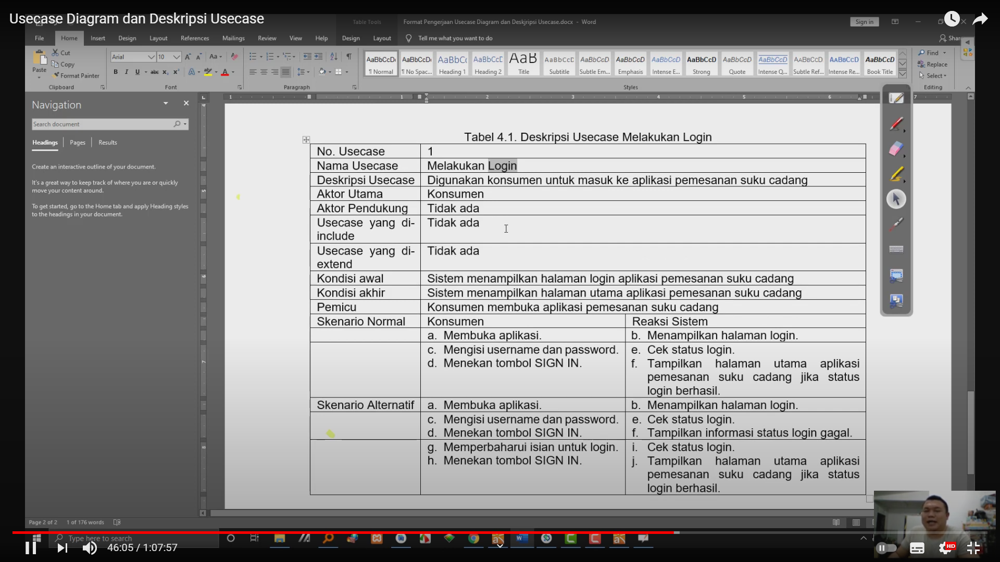

NIM : 1811500025
Nama : Jimmy Ngui
Kelompok : TI6A
Hasil Saya Menyadur :
1.Use Case merupakan interaksi aktor (digambarkan dengan wujud stickman) satu atau lebih dengan sistem
2.Fungsi pada sistem berupa login, order, upload, dll
3.Aktor adalah pengguna sistem. (stickman != user)
4.Aktor aktif (pengguna/berinterkasi dengan sistem) di bagian kiri sedangkan aktor pasif (aktor yang memerlukan inputan) dikanan.
5.Include adalah disertakan (panah ke usecase yang diperlukan) & Extend adalah pengembangan (panah ke usecase induk).
Miscellaneous :

Hasil Latihan Saya